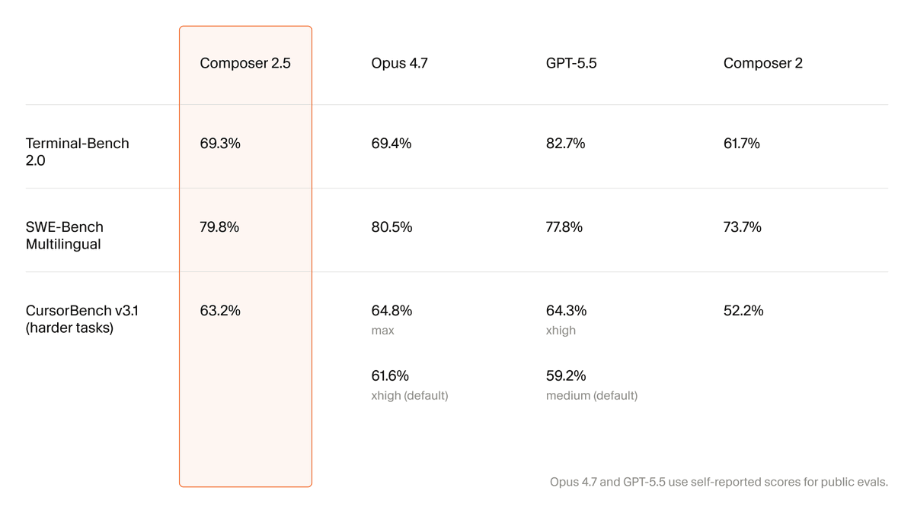

Script
Ready
Bấm vào slide để bắt đầu...
Âm Thanh
Ready
@viro
@viro
BenchCostRLMoat
Composer 2.5
Sát nhóm đầu ở hard task
và rẻ hơn tới 10 lần
63.2% hardOpus 4.7GPT-5.5
Benchmark sát nhóm đầu
không chỉ là hype

C2.5
63.2
Opus
64.8
GPT
64.3
C2 52.2%
C2.5 63.2%
Điểm ăn tiền nhất
là cost per task
10x
Chi phí/task thấp hơn nhiều
Daily coding
Đủ khỏe để dùng mỗi ngày
Base model là
Kimi K2.5
Kimi K2.5
Composer 2.5
85%
Compute thêm từ training + RL
MOAT
Lợi thế ở pipeline huấn luyện
Blog kỹ thuật lần này
khá gắt
25x task
Synthetic training scale-up
Text feedback
Sửa lỗi cục bộ giữa đường
Bám task dài
Không trượt mục tiêu
Chốt lại
Composer 2.5 chưa chắc số 1
Price-performance
Sát Opus 4.7, GPT-5.5
và rẻ hơn nhiều
và rẻ hơn nhiều
API thuê
Lớp nền ban đầu
Fine-tune dọc
Sản phẩm tối ưu cho dev
Model riêng
Cuộc chơi dài hạn
1/6